Data publicării: 12.06.2018
Autor articol: Mircea Vaida
1. Tipologiile de personalitate prin abordarea Myers-Briggs Type Indicator (MBTI)
MBTI este un chestionar psihometric care măsoară preferinţele psihologice ale persoanelor în privinţa modului în care aceste persoane văd lumea şi iau decizii. Metoda a fost dezvoltată de Katharine Cook Briggs şi Isabel Briggs Myers, pe paza teoriei tipologiilor de personalitate dezvoltat de Carl Jung, publicată în Psychological Types (1921).
Definirea unor indicatori de personalitate se va baza pe patru perechi de indicatori primari opuşi:
- Extraversion – Introversion (E vs. I) (focalizarea atenţiei)
- Sensing – Intuition (S – N) (încorporarea informaţiilor)
- Feeling – Thinking (F – T) (luarea deciziilor)
- Judging – Percieving (J – P) ( relaţia cu lumea exterioară)
Trebuie să ţinem cont de faptul că, în acest caz, cuvintele asociate indicatorilor primari nu vor avea în mod obligatoriu înţelesul de uz general, de exemplu:
- Extraversion – nu înseamnă neaparat o persoană galagioasă care vorbeşte mult
- Introversion – nu înseamnă că persoana e timidă
- Feeling – nu presupune o fire emoţională
- Percieving – nu înseamnă neaparat perceptiv
Trăsăturile asociate indicatorilor primari sunt următoarele (se vor folosi literele asociate) [6] :
E – orientat spre acţiuni, pot acţiona repede, fără să ţină cont de efectul acţiunilor
- Preferă mediile exterioare, deschise
- Modul principal de comunicare este vorbirea
- Învaţă cel mai repede prin discuţii şi experimente
- Au fire sociabilă şi expresivă
- Preferă munca în echipă
I – orientat spre gândire, sunt preocupaţi de consecinţele acţiunilor
- Preferă mediile închise
- Preferă comunicarea prin scris
- Învaţă cel mai uşor prin practici mentale şi sunt reflectivi
- Au o fire privată şi rezervată
- Preferă să lucreze singuri, dar şi lucrul în echipă
S – Orientaţi spre detalii, informaţii specifice
- Valorează realismul, ce se întâmplă în prezent, fire pragmatică
- Analizează mult înainte să aungă la concluzii
- Au încredere în experienţă
N – fire teoretică, preferă conceptele generale, planurile de nivel înalt
- Orientaţi spre viitor
- Valorează imaginaţia
- Observă caracteristici şi căi în datele specifice
- Ajung repede la concluzii, urmăresc intuitia
- Au încredere în inspiraţie
T – fire analitică, caracterizată de raţionament cauză – efect
- Rezolvă problemele în mod logic, obiectiv
- Rezonabili, dar caută imperfecţiunile argumentelor
- Doresc ca fiecare persoană să fie tratată în mod egal
F – empatici, caracterizaţi de sisteme de valori personalizate
- Analizează impactul deciziilor în privinţa celorlalte persoane
- Orientaţi spre armonie şi interacţiuni pozitive
- Caracterizaţi de compasiune
- Caută punctul de înţelegere într-un argument
- Doresc ca fiecare persoană să fie tratată în mod individual
J – organizaţi, activităţi şi programe fixate
- Doresc terminarea unui proiect înainte de a începe alt proiect
- Iau decizii rapide
- Încearcă să evite modificările de ultimul moment, rezolvă problemele înainte de deadline
- Preferă activitatea de rutina şi sunt efectivi
P – fire spontană şi flexibilă
- Încep multe proiecte, dar pot avea probleme cu terminarea lor
- Preferă să menţină posibilitatea de a schimba ceva pe parcurs
- Energizaţi de modificări de ultimul moment, rezolvă problemele exact la deadline
- Le plac surprizele
- Privesc activitatile de rutina ca limitări
Combinaţia celor patru indicatori primari duce la 16 tipologii diferite de personalitate: ENFJ, ENFP, ENTJ, ENTP, ESFJ, ESFP, ESTJ, ESTP, INFJ, INFP, INTJ, INTP, ISFJ, ISFP, ISTJ, ISTP.
Există studii elaborate asupra fiecărui tip specific de personalitate, însă prezentarea lor depăşeşte cadrul acestui raport.
Avantajele metodei MBTI constă din faptul că metoda are origini bine determinate şi este în concordanţă cu aspecte psihologice moderne. Există numeroase exerciţii care subilinază efectivitatea metodei, şi este larg răspândită în domeniile de consiliere ale carierei sau team-building. Sunt definite căile de cariere optime pentru fiecare tip de personalitate şi modalităţile de organizare în echipe compatibile bazate pe o abordare matricială fuzzy de tip NxN [6] [9].
Dezavantajele principale constă din faptul că metoda nu ţine cont de evoluţia cognitivă şi spirituală sau motivaţia unei persoane şi are tendinţa să ridice anumite bariere.
1.1 Maparea eneatipurilor cu cei 16 indicatori de personalitate
Analizând cele două metode de determinare ale tipurilor de personalitate putem ajunge uşor la o conluzie: cele două metode au o anumită suprapunere, dar prezintă abordări diferite. Acest lucru înseamnă ca unui eneatip specific îi corespund mai mulţi indicatori MBTI, dar şi inversul este adevărat.
Există numeroase studii care încearcă să definească o mapare corectă între cele două metode. Din punctul de vedere al unei implementări software va trebuie definit un algoritm clar şi concis de mapare, ceea ce presupune o mapare restrictivă între cele două moduri de analiză. O astfel de metodă este definita pe baze statistice în [10], şi arată în felul următor:
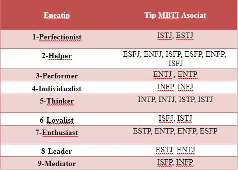
1.2 Aspecte de personalitate importante în crearea echipelor
În vederea creării echipelor de lucru cu dinamică şi compatibilitate maximă trebuie să ţinem cont de câteva cerinţe importante. În primul rând trebuie ţinut cont de aspectele pozitive şi negative ale metodelor prin care încadrăm studenţii/angajatii în anumite tipuri de personalitate (menţionate mai sus).
Nici o persoană nu prezintă caracteristici de personalitate care ar putea fi determinate cu o precizie 100% printr-un test. Persoanele prezintă înclinaţii spre mai multe tipuri de personalitate, cu un caracter principal într-un anumit tip de personalitate. Într-o eventuală implementare va trebui analizate şi aspectele secundare dacă echipele nu pot fi create pe baza aspectelor principale.
Formele moderne de învăţământ ţin cont de motivaţia, interesul, evoluţia cognitivă şi spirituală ale studenţilor, ceea ce presupune că factorii principali în crearea echipelor de lucru vor fi grupările definite prin modelul eneagramei, iar pentru o precizie ridicată (rafinarea) prin compatibilitatea grupărilor pe baza eneatipurilor trebuie să fie subliniată si de aspectele MBTI ale membrilor.
De exemplu, dorim să creăm o echipă de 3 persoane, iar persoanele vor fi supuse unui test mixt Enneagrama–MBTI.
Prin partea bazată pe Enneagrama a testului s-a determinat că tipologiile membrilor sunt 1,7,4, ceea ce presupune un grup compatibil. Indicatorii asociati fiecărei persoane sunt următorii: ISTJ, ESTP, INFJ. Aspectele MBTI vor sublinia compatibilitatea grupării, deoarece, dacă analizăm membri câte 2, vom avea atât suprapuneri cât şi diferenţe în indicatorii lor MBTI.
Dar ce se întâmplă în cazul în care eneatipul arată un lucru, iar indicatoarele MBTI nu corespund mapării Eneagrame-MBTI? (exemplu: un membru cu eneatipul 4 dar indicatorul MBTI este ISFJ)
În acest caz există două abordări. Se presupune ca gruparea pe Eneagrame este corectă, dar se va analiza dacă se respectă criteriile menţionate mai sus pentru aspectele MBTI ale echipei. Dacă se respectă, gruparea este corectă. Dacă nu, se caută mai departe.
Abordarea a doua este una bazată pe caracteristici principale şi secundare. Rezultatele testului de personalitate vor sublinia aspectele primare şi secundare Enneagramă-MBTI. Prima dată se va dori crearea echipelor pe baza primului eneatip, din cauze aspectelr psihologice menţionate mai sus. Dacă după acest pas echipele nu vor fi complete, se vor asocia studenţii rămaşi în afara grupelor prin tipul lor MBTI.
O altă întrebare ce se pune: ce se întâmplă cu persoanlele care nu vor putea fi incluse în echipele de compatibilitate optimă?
În acest caz se pot defini echipe de compatibilitate redusă prin eneatipuri, dar care sunt întărite de aspectele de compatibilitate MBTI, pe baza caracteristicilor secundare. Această abordare va fi prezentata în detaliu în capitolul următor, deoarece aplicaţia dezvoltată se bazează pe metoda respectivă.
Capitolul următor va prezenta pe scurt un exemplu de framework al unui sistem web – based în e-learning, deoarece aplicaţia web realizată incorporează anumite aspect ale unui asemenea framework.
2. Exemplu de framework web-based de formare al echipelor
Figura urmatoare prezintă schema simplificată al unui framework semantic de formare al echipelor într-un sistem de tip e-learning:
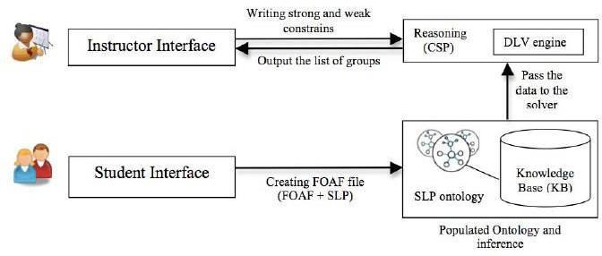
Blocurile principale al framework-ului sunt următoarele [5]:
a) Interfaţa Student
Studenţii îşi pot introduce datele cu ajutorul unui formular web-based. Formularul constă din 5 părţi semnificative:
- Datele personale al studentului
- Lista cunoscuţilor şi prietenilor
- Lista cu interese şi preferinţe
- Informaţii despre cursurile la care stundentul este înscris
- O listă a cunoscuţilor care sunt înscrişi la cursuri similare
Studenţii vor avea posibilitatea să schimbe datele din profil în orice moment. Interfaţa poate fi similară cu interfaţa unei pagini de socializare pentru creşterea interesului studenţilor.
b) Ontologia
Ontologia stochează o gamă largă de date specifice studentului. Încorporează date personale, sociale, academice. Conţine date despre stilul de învăţământ preferat, module preferate, câmpuri didactice spre care se orientează studentul, şi lista de “contacte”. Reprezentarea semantica a acestor date, după ce se mapează cu constrângerile specificate de instructori, va genera o gamă largă de date de nivel 2, pe baza inferenţelor.
c) Interfaţa Instructor
Pe baza acestei interfeţe, instructorul poate selecta constrângerile şi valorile dorite pentru constrângerile respective, pe baza cărora se va face selecţia şi gruparea candidaţilor. Constrângerile pot fi luate după importanţă (metodă de grupare în baze de date), şi pot fi ponderate cu valori de prioritate.
d) Generatorul de echipe
Generatorul de echipă este componenta principală din framework. Scopul generatorului este negocierea şi alocarea studenţilor în echipe.
Algoritmul care stă pe baza generatorului este un algoritm de tip forward checking, şi lucrează pe baza datelor furnizate de candidaţi şi de instructor.
Prin interfaţa instructor sunt specificate constrângerile candidate pentru evaluare. Constrângerile specificate pot fi grupate în două grupe: constrângeri puternice, care trebuie satisfăcute, şi constrângeri slabe, care trebuie preferabil satisfăcute. Cu ajutorul constrângerilor slabe se poate obţine o anumită flexibilitate în ceea ce se priveşte mulţimea de date ce pot lipsi din profilul unui student.
Generatorul va furniza soluţii multiple pe baza constrângerilor, fiecare soluţie se numeşte model. Modelul optim este gruparea optimă al studenţilor pe baza constrângerilor şi datelor de intrare specificate.
Capitolul următor va prezenta aplicaţia realizată care încorporează atât aspectele frameworkului prezentat anterior, şi furnizează o soluţie completă în evaluarea tiplogiilor de personalitate ale studenţilor în vederea creării echipelor compatibile.
3. Implementarea soluţiei adoptate
3.1. Aspectele generale al soluţiei
Soluţia implementată se numeşte „Teste Personalitate Enneagramă-MBTI” şi constă dintr- o aplicaţie web ce încorporează aspectele teoretice menţionate în cadrul capitolelor anterioare. Scopul aplicaţiei este de a furniza o soluţie completă pentru crearea echipelor compatibilie de lucru în e-learning, folosindu-se de aspectele tipologiilor de personalitate ai membrilor unei grupe. Aplicaţia a fost realizată utilizând coduri PHP, HTML şi JavaScript. Deoarece a fost utilizat PHP, pentru a putea fi rulată, aplicaţia web va necesita adăugarea următoarelor resurse:
- Un server apache, care va funcţiona ca server PHP
- Un server de MySql, pentru baza de date a aplicaţiei
Pentru a uşura procesul dezvoltării aplicaţiei, a fost utilizat programul XAMPP, program gratis care încorporează atât un server Apache, cât şi server MySql.
Operaţiunile critice ce urmează a fi urmate de aplicaţie sunt următoarele:
- Studenţii se înregistrează în cadrul paginii
- Studenţii efectuează testul de personalitate definit în cadrul aplicaţiei şi primesc rezultatele testului
- Se înregistrează şi profesorii
- Testul de personalitate poate fi efectuat şi de profesori
- Profesorii au abilitatea de a lista grupele şi a parcurge infomaţiile studenţilor
- Profesorii au abilitatea de a şterge studenţi sau grupe de studenţi
- Profesorii crează echipele interactive, după ce fiecare student din grup a efectuat testul de personalitate
- Profesorul alocă studenţii rămaşi în afara echipelor
- Rezolvarea aspectelor de securitate (asigurând în principiu ca studenţii să nu aibă acces la resursele profesorului)
3.2. Diagrama paginilor şi interfeţele aplicaţiei
Pe baza celor amintite anterior, aplicaţia va fi compusă din următoarele părţi semnificative:
- Baza de date (Ontologia)
- Interfaţa Student
- Interfaţa Profesor
- Testul de personalitate
- Motorul de grupare
- Mecanismele de securitate
3.2.1 Baza de date
Baza de date va fi entitatea ce stă în spatele aplicaţiei şi va fi responsabilă pentru gestionarea şi înregistrarea tutoror acţivităţilor specifice aplicaţiei.
Înainte de a modela şi construi baza de date, dezvoltatorul trebuie să aibă o idee cât se poate de clară despre funcţionalitea şi arhitectura aplicaţiei ce urmează a fi dezvoltat. Primul pas constă din schiţarea diagramei de pagini a aplicaţiei. Diagrama paginilor şi notarea cerinţelor specifice a fiecărei pagini din diagramă va furniza atât majoritatea informaţiilor, câmpurilor şi a relaţiilor ce va trebui să conţină baza de date, cât şi informaţii generale asupra acţiunilor ce vor trebui efectuate asupra bazei de date prin intermediul paginilor web.
3.2.2 Diagrama paginilor aplicației
Înainte de a crea efectiv baza de date, trebuia schiţat modul prin care se doreşte utilizarea aplicaţiei. Figura 2 . prezintă diagrama de pagini a aplicaţiei web de Testare – Grupare Eneagramă – MBTI.
Din punctul de vedere al bazei de date înregistrarea presupune adăugarea utilizatorilor, pagina de login presupune verificarea existenţei şi a datelor de utilizator, iar acţiunile ce se vor putea efectua prin intermediul portalului de profesor şi/sau student ar presupune actualizări sau ştergeri.
Pentru orice bază de date principiile generale de dezvoltare sunt următoarele:
- De preferat număr minim de tabele, legate între ele prin intermediul coloanelor caracteristice
- Tabelele ar trebui să aibă chei primare
- Se va evita stocarea şi menţinerea informaţiilor redundate. Informaţiile redundante se vor stoca doar dacă vor uşura şi optimiza utilizarea bazei de date
- Se vizează un număr optim (minim) de înserări/ ştergeri în baza de date.
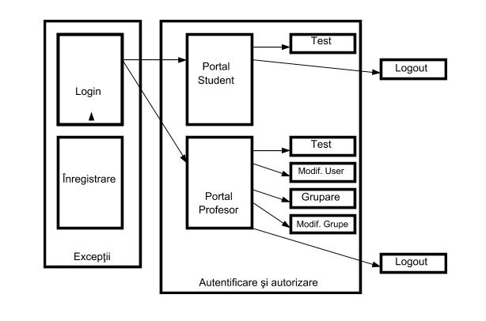
Subcapitolul următor va descrie modelul simplificat propus pentru baza de date a aplicaţiei.
3.2.3 Modelul propus pentru baza de date
Baza de date care va deservi aplicaţia web va avea o schemă simplificată, optimizată în trei tabele:
- 3.2.3.1 Tabelul users, care va menţine toate datele de utilizatorilor şi va diferenţia profesorii de studenţi.
- 3.2.3.2 Tabelul test_results care va stoca tipurile de personalitate principale al fiecărui utilizator. Tipurile de personalitate se vor obţine prin testul eneagramă-MBTI
- 3.2.3.3 Tabelul intgroup care va stoca grupele interactive de studenţi obţinute cu ajutorul mecanismului de grupare
Relaţia principală între tabele va fi id-ul utilizatorului. Figura 3. prezintă modelul bazei de date:
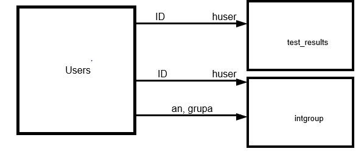
Pentru a reduce numărul înserărilor şi actualizărilor intermediare, după înregistrare, utilizatorul va avea la dispoziţie o înregistrare în fiecare dintre tabele cu legăturile caracteristice predefinite, iar mecanismele de testare şi grupare vor actualiza doar înregistrările deja existente. Această abordare va uşura semnificativ gestionarea datelor.
Figurile următoare au fost realizate prin intermediul aplicaţiei XAMPP, şi vor prezenta coloanele tabelelor:
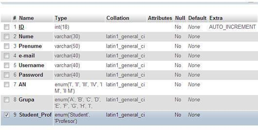
Tabelul users este singurul tabel care va avea toate câmpurile completate în urma înregistrării. Diferenţa între o înregistrare de tip stundent şi de tip profesor se va realiza prin coloana Student_Prof. Câmpurile principale se vor utiliza din tabelul respentiv sunt:
- ID (baza de date, verificări de existenţă)
- Username, Password, Student_Prof (autentificare, securitate)
- An, Grupa (grupare interactivă)
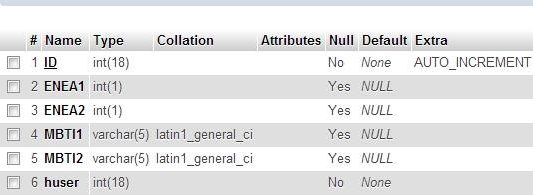
Tabelul test_results este menită să stocheze principalele eneatipuri şi indicatori MBTI al utilizatorului. În urma înregistrării coloanele ENEA1, ENEA2, MBTI1, MBTI2 vor avea „valoarea” NULL, şi se vor actualiza în urma efectuării testului de personalitate. Legătura cu tabelul users se realizează prin coloana huser care va pointa spre ID-ul utilizatorului.
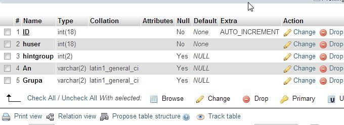
Tabelul intgroup va stoca grupa interactivă din care face parte studentul. Este singurul tabel ce conţine informaţii redundante. La inregistrare coloanele huser, An, Grupa se vor completa cu ajutorul înregistrării înserate în tabelul users. Coloanele An şi Grupa au fost incluse ca, în momentul în care profesorul va genera grupele interactive, aplicaţia să parcurgă doar un singur tabel (grupele interactive fiind generate /an /grupă).
Deşi schema bazei de date este una simplificată şi cu un număr redus de tabele, acest model ar trebui să servească aplicaţia web cu o eficienţă optimă.
Subcapitolul următor va furniza informaţii utile despre tratarea unor probleme care sunt cauzate de faptul că se utilizează multe limbaje de dezvoltare în codul aplicaţiei.
3.2.4 Tratarea problemelor codului sursă pe mai multe nivele
După cum am amintit anterior, codul sursă al aplicaţiei se va realiza prin 3 limbaje de programare: PHP, HTML şi JavaScript.
PHP este un limbaj de programare de tip server-side, fiind menit în primul rând să menţină o conexiune cu baza de date, să efectueze interogările necesare şi să prelucreze rezultatele interogărilor, rezultatele finale ale codurilor PHP fiind afişate şi interpretate de limbajele de programare care vor realiza afişarea efectivă.
HTML este un limbaj de marcaj de tip client-side, prin care se realizează aspectul vizual al paginilor aplicaţiei şi care va furniza obiectele vizuale care vor rezulta o interfaţă utilizator prin intermediul căruia se pot introduce datele utilizatorului şi opţiunile legate de funcţionalităţile paginii pe care ar vrea sa acceseze.
JavaScript este un alt limbaj de programare client-side, care va întări aspectele codului html cu o anumită logică definită, prin care se pot analiza opţiunile utilizatorului şi se pot efectua anumite operaţii aproximativ în timp real.
Din cauza celor amintite mai sus, cosul sursă al aplicaţiei se va executa pe trei nivele:
- Se execută codul PHP se realizează interogarea bazei de date
- Se execută codul HTML, se afişează pagina în browser
- Se execută codul JavaScript pe baza codului HTML
După realizarea diagramei de pagini al aplicaţiei dezvoltatorul va trebui să analizeze ce tipuri de cod necesită paginile, şi cum se va realiza interacţiunea paginilor.
Analiza respectivă constă din doi paşi semnificativi:
- cum se realizează comunicarea intercod pe un singur nivel (PHP)
- cum se realizează comunicarea intercod pe mai multe nivele (PHP – HTML, PHP – Javascript)
a) Comunicarea intercod pe un singur nivel
În acest pas trebuie definit modul în care codul PHP va interacţiuna cu baza de date. Într- un prim pas codul PHP va trebui să realizeze o conexiune către baza de date. După ce conexiunea se realizează cu succes, codul va trebui să interogheze baza de date. Deoarece o interogare presupune o sintaxă de tip SQL (MySql, Oracle), sintaxa respectivă va trebui construită în cadrul unei variabile de tip string, după care sintaxa respectivă trebuie trimisă către server, iar rezultatele interoghării vor trebui preluate şi stocate printr-o altă variabilă. Un aspect pozitiv al limbajului PHP este flexibilitatea variabilelor. O variabilă se poate defini într-un mod foarte generic, şi poate stocha diferite tipuri de date. Însă dezvoltatorul trebuie să ştie tipul datelor stochate în variabile, când variabilele vor fi utilizate în realizarea unor anumite operaţii.
Exemplu de cod ce realizează acest tip de cominicare:
<?php
//conectare la baza de date
$bd = mysql_connect("localhost","root","vsanci") or die("Ups something went wrong");
mysql_select_db("test_personalitate",$bd) or die("Ups something went wrong");
//interogarea construită printr-o variabilă de tip string
$sql = "select ifnull(count(u.id),0) good from users u join test_results tr on
tr.huser=u.id
where (tr.enea1 is null or tr.enea2 is null or tr.mbti1 is null
or tr.mbti2 is null) ";
//preluarea rezultatelor
$result=mysql_query($sql);
// preluarea primei valoare returnată
$ok=mysql_result($result,0,"good");
?>
b) Comunicarea intercod pe mai multe nivele
Un aspect mai interesant al dezvoltării aplicaţiilor web constituie implementarea comunicării intercod. În acest caz programatorul trebuie să ţină cont de şirul execuţiilor tipurilor de cod diferite şi va trebui să rezolve cumva preluarea şi transmisia datelor.
Comunicarea între codurile de tip HTML şi PHP se poate realiza relativ uşor, în modurile următoare:
-prin ajutorul superglobalelor $_GET[], $_POST[], constructorului echo
-prin includerea condiţionată ale unor coduri php în cadrul codului html
-prin încadrarea codului php în codul paginii şi apelarea aceleaşi pagini în mod repetat.
În principiu cele trei modalităţi se folosesc simultan, şi vor depinde de o acţiune anume din partea utilizatorului, cum ar fi apăsarea unui buton. Primadată când se apelează pagina, codul PHP inclus nu va putea prelua date din html, astfel codul nu se va executa. În pasul următor utilizatorul va introduce anumite date în câmpurile paginii, iar la apăsarea unui buton de tip „submit” se pot întâmpla două evenimente:
- Se va include codul php, care de această dată va dispune de datele necesare furnizării unui rezultat
- Pagina va fi reapelată şi când codul html este re-executat se vor afişa şi rezultatele furnizate de codul PHP.
Un exemplu caracteristic al acestei abordări: să presupunem că prin codul html este descris un formular, în care se pot introduce anumite date, şi se doreşte listarea din baza de date într-un tabel, prin intermediul datelor introduse în formular. Ce se va întâmpla în acest caz?
- Prima dată când se execută codul paginii, codul PHP nu va dispune de datele necesare pentru furnizarea unui rezultat.
- Se va executa codul html, pagina va apărea în browser, şi utilizatorul va putea introduce date în formular. Se observă că la apăsarea butonului de listare, se va reapela pagina cu opţiunea de listare date.
<table bgcolor="#CCCCCC"> <form action="grouping.php?option=list" method="post"> ... <tr><td><b>Nume:</td><td><input type="text" name="nume" /><br /></td></tr> <tr><td><b>Prenume:</td><td><input type="text" name="prn" /><br /></td></tr> <tr><td colspan="2" align="center"><input type="submit" value="Listeaza"/></td></tr> </form></table>
3. Din cauza rezultatelor insuficiente furnizate de codul PHP, tabela rezultat va conţine doar capătul coloanelor, dar nu va conţine şi date. Pe de altă parte se poate observa uşor ca dacă codul PHP ar returna date, datele ar fi afişate rând cu rând în tabel, până când se execută constructorul echo care va închide tabelul.
<table>
<tr>
<th><font face="Arial, Helvetica, sans-serif">Nume</font></th>
<th><font face="Arial, Helvetica, sans-serif">Prenume</font></th>
</tr>
<?php
$i=0;
while ($i <= $count) {
$nume1=mysql_result($result,$i,"nume");
$prenume1=mysql_result($result,$i,"prenume");
?>
<tr>
<td><font face="Arial, Helvetica, sans-serif"><?php echo $nume1; ?></font></td>
<td><font face="Arial, Helvetica, sans-serif"><?php echo $prenume1; ?></font></td>
</tr>
<?php
$i++;
}
echo "</table>";
?>
4. Se apasă butonul de listare, iar pagina va fi reapelată cu opţiunea dorită (“grouping.php?option=list”) , şi se vor putea utiliza în cadrul codului PHP şi datele introduse în formular:
<?php
$option=$_GET["option"]; if ($option=="list")
{
$name=$_POST['nume'];
$prn=$_POST['prn'];
$sql = "...";
$result=mysql_query($sql);
$count=mysql_num_rows($result);
}
?>
5. Când se reexecută codul menţionat în punctul 3), instrucţiunile buclei while vor prelua datele potrivite, iar în tabel se vor afişa rezultatele dorite prin echo.
Modul în care se realizează comunicarea opţionilor şi datelr între codul HTML şi JavaScript este similară modului în care se realizează comunicarea HTML – PHP, diferenţa este doar în sintaxa codului, şi ale opţiunilor permise în JavaScript.
O complicaţie în realizarea aplicaţiei este asigurarea comunicării codului JavaScript cu codul PHP, deoarece PHP este cod de tip server-side, şi se va apela cu două nivele înaintea execuţiei codului JavaScript. Acesta nu se poate realiza în mod direct, ci doar prin apelarea unor pagini noi, sau prin reapelarea paginii Prin JavaScript, iar rezultatele ce urmează a fi furnizate către PHP se vor transmite ca variabile în URL-ul paginii apelate:
// Apelare din Javascript window.open("interpretresults.php?enea1="+result[1]+
"&enea2="+result[2]+"&mbti1="
+result[3]+"&mbti2="+result[4],"_self");
//Preluare date prin PHP în cadrul paginii apelate
<?php
$enea1=$_GET["enea1"];
$enea2=$_GET["enea2"];
$mbti1=$_GET["mbti1"];
$mbti2=$_GET["mbti2"];
?>
O insuficienţă uneori semnificativă ale codurilor PHP constituie faptul că din PHP nu se pot realiza avertizări în timp real, cum se pot prin JavaScript, deoarece codul PHP va fi executat înaintea codului HTML. Uneori este de dorit afişarea unor avertizări în timpul execuţiei codului PHP şi utilizatrul nu vrea ca fiecare mesaj de eroare să apară efectiv pe pagina de web.
Ca şi soluţie pentru această insuficienţă se înserează un “artificiu” mic în codul PHP, un echo în cadrul căruia se va construi o alertă de tip JavaScript:
$ok=mysql_result($result,0,"good"); if ($ok !== "0") {
$message="Mai exista studenti in grupa care nu au efectuat testul de
personalitate!"; echo '<script type="text/javascript">
alert("'.$message.'+'.$an.'+'.$grupa.'+ '.$ok.'"); </script>';
}
Acestea sunt aspectele cele mai imprtante în ceea ce se priveşte modul în care se poate realiza comunicarea intercod pe mai multe nivele. În cadrul subcapitolului următor se va realiza descrierea efectivă al aplicaţiei.
3.2.5 Interfeţele Student şi Profesor
Interfaţa studentului este una relativ simplificată. În cadrul aplicaţiei activitatea studentului se poate rezuma la doi paşi semnificativi. În primul pas, studentul se va înscrie pe pagină, furnizând datele necesare pentru a fi încadrat într-un an şi într-o grupă, şi-şi alege numele de utilizator şi parola. În pasul doi, studentul va folosi numele de utilizator şi parola ca să acceseze interfaţa, şi să efectueze testul de personalitate.
Din această cauză, interfaţa specifică stundentului se va rezuma la urmatoarele dotări:
- Va furniza linkul către testul de personalitate
- Va cere ca studentul să-şi efectueze testul dacă nu a făcut acest lucru incă, iar în caz contrar va lista rezultatele testului de personalitate, ca studentul să ştie că şi-a făcut întrebuirile.
Figura 7 prezintă interfaţa şi informaţiile returnate pentru un student care şi-a efectuat testul de personalitate:
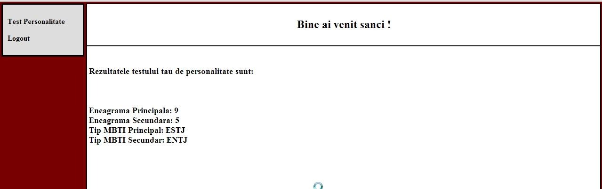
Se pot constata uşor opţiunile limitate la dispozitia studentului, cea ce asigură ca activitatea lui să se rezume doar la paşii necesari.
Ca şi aspect, interfaţa profesorului este similară interfeţei studentului, însă interfaţa profesorului îî oferă o varietate de opţiuni, cum ar fi completarea testului de personalitate, vizionarea datelor, ştergerea studenţilor şi a grupelor, gruparea studenţilor şi modificarea grupelor interactive. Figura 8. prezintă interfaţa profesorului:
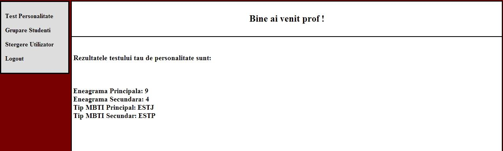
Din meniul din stânga ecranului, profesorul va putea accesa paginile cu ajutorul cărora va putea viziona datele studenţilor, şi să şteargă anumiţi studenţi sau grupe, sau pagină prin care va realiza crearea echipelor de lucru în cadrul unei grupe (Figura 9. si 10.):
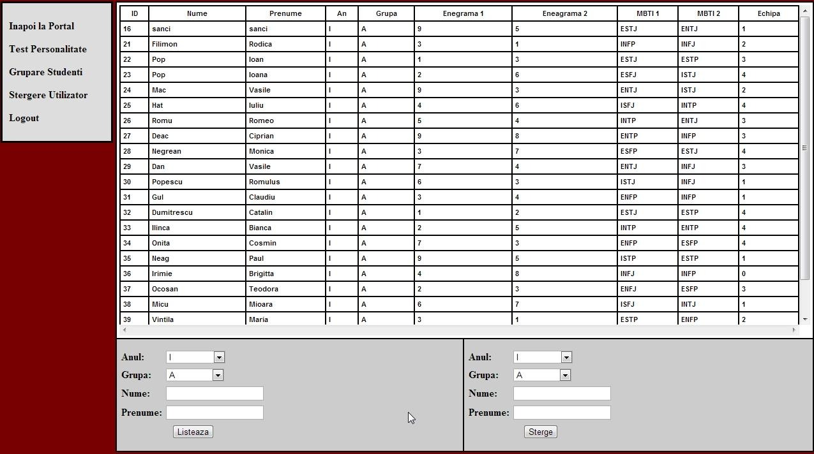
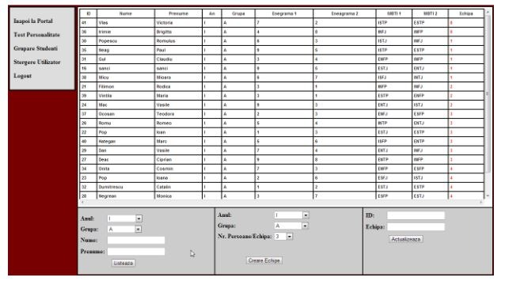
În cadrul paginii de creare ale echipelor, profesorul va putea lista grupa pentru care vrea să creeze echipele compatibile de lucru, apoi selectează numărul de persoane într-o echipă, şi butonul de creare echipe. După ce echipele au fost create, ele vor fi listate pe ecran în ordine crescătoare, astfel studenţii rămaşi în afara echipelor vor apărea primii. În acest moment, profesorul va putea actualiza uşor lista, introducând doar ID-ul studentului, şi echipa la care vrea să-l adauge.
Funcţionalităţile specifice a aplicaţiei constă din testul mixt de personalitate eneagramă- MBTI, funcţia JavaScript ce returnează rezultatele testului, şi motorul de creare al echipelor. Aceste funcţionalităţi vor fi prezentate în cadrul următorului raport.
4. Bibliografie
[1] M. F. Vaida, F.C. Pop, M. Cremene, L. Alboaie, Creating Optimal Groups of Students in E- learning using Alternative Methodologies, CATE2011, Cambridge, July 11 – 13, 2011, pp.30-37
[2] M. Prince – Does Active Learning Work? A Review of the Research, Department of Chemical EngineeringBucknell University, 2004, pp.1-2
[3] Managing Groups – Blackboard 9, Teaching and Learning Center, University of Oregon, pp. 1-4
[4] E. J. Robertson – The effect of learning styles on group development in an online learning environment, University of North Carolina Wilmington, 2005 pp.10-40
[5] A. Ounnas, H. C. Davis, D. E. Millard: A Framework for Semantic Group Formation in Education, EducationalTechnology & Society, 2009, pp. 4-11
[6] K. Prem : Myers-Briggs Personality Type Indicator – MBTI, Career Enhancement Committee University of Wisconsin-Madison sl. 7-16
[7] The Enneagram: A Typology of Personality , http://www.canadianenneagram.ca/enneagram/
[8] Enneagram Worldwide: Enneagram 101 – „A quick-and-easy overview of the nine Enneagram types”, 2007 , pp. 3-14
[9] The Myers-Briggs Typology System, http://www.russellrowe.com/enneagram-type-self-assessment-22.php
[10] T. Flautt, J. Richards: MBTI and Enneagram – Their Relationship and Complementary Use, http://personalitycafe.com/enneagram-personality-theory-forum/60153-mbti-enneagram-their-relationship-complementary-use.html
[11] The Riso-Hudson Enneagram Type Indicator – Version 2.5 – 2001, pp. 3-20
[12] H. Friedman – Planetary Session V – MBTI Personality Test, pp. 2-134
[13] P. Paredes, A. Ortigosa, P. Rodriguez – A Method for Supporting Heterogeneous-Group Formation through Heuristics and Visualization, Journal of Universal Computer Science, vol. 16, no. 19 (2010), pp. 2-11
[14] Socionics: Easy-to-remember intertype relationship charts, Complete relationship chart between psychological (“personality”) types, 2007, http://www.socionics.com/articles/charts.ht, http://www.socionics.com/rel/relcht.htm
[15] A. Ounnas – Semantic Web-based Group Formation for E-learning, School of Electronics and Computer Science University of Southampton, pp. 1-5
[16] PHP Manual,http://php.net/manual/en/tutorial.php
[17] M.-F. Vaida, K.-I. Benta, Groupware Refinements for Collaborative Teams, 14th RoEduNet International Conference – Networking in Education and Research (RoEduNet NER), pp. 56-62, Craiova, sept. 2015
[18] Russell Rowe, Enneagram Types, http://www.russellrowe.com/enneagram-types/
[19] Russell Rowe, Self-awareness-self-assessments-overview, http://www.russellrowe.com/self-awareness-self-assessments-overview-21.php
[20] Dr. Kaylene C. Williams, Dr. Alfred R. Petrosky, and Dr. Edward H. Hernandez, THE ENNEAGRAM AND ITS POSSIBILITIES FOR STUDENT LEARNING, JBMC, April 2008 Issue
[21] Helen Palmer, Enneagram 101, http://newb.mu/wp-content/uploads/2016/09/Enneagram-101.pdf
[22] Michael J. Goldberg, The 9 Ways of Working: How to Use the Enneagram to Discover Your Natural Strengths and Work More Effectively Paperback – April 22, 1999, http://archive.org/details/9waysofworkingh00gold
[23] Jaxon-Bear, Eli, “Preserving the Transmission and Spiritual Context of the Enneagram.” http://leela.org/category/content-en/enneagram-articles-en/
[24] Nicholas Lore, The Pathfinder: How to Choose or Change Your Career for a Lifetime of Satisfaction and Success, New York : Touchstone Book, 2012.